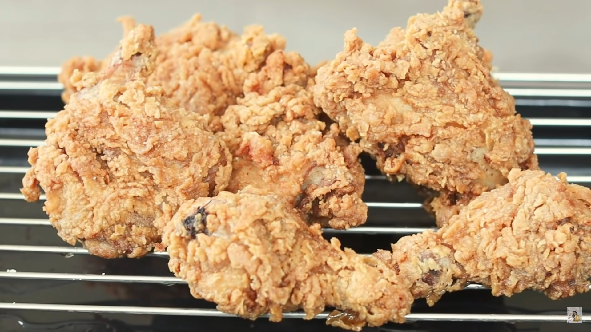

Delicious fried chicken
Go back to all recipes

Description:
Turns out that the key to making a good Fried Chicken is the coating and the cooking process.
The most important thing is to use quality marinade and flour coating. The long marination process will ensure that the marinade is absorbed
optimally into the chicken.
Ingredients
- Blended spices:
- 10 clove garlic
- 1 pc onion
- 150 ml water
- Marinated Chicken:
- 1 pc chicken
- 4 tbsp blended spices
- 8 tbsp thick coconut milk
- 2 tbsp rice wine vinegar or 1 tbsp white vinegar
- 1 tbsp chicken powder
- 2 tsp salt
- 2 tbsp sugar
- ½ tbsp pepper
- 1 tbsp Italian mixed herbs
- Dry Coating:
- 300 g all-purpose flour
- 100 g cornstarch
- 2 tbsp baking powder
- ½ tbsp pepper
- 1 tbsp salt
- 1 tbsp paprika powder (optional)
- 1 tbsp chicken powder
- Wet Batter:
- 6 tbsp dry coating
- 2 tbsp blended spices
- 150 ml water
- Other:
Steps:
- Blend the onion, garlic, and water until smooth. Set aside.
- Clean the chicken and chop into 8-10 slices.
- Blend the Italian mixed herbs to a finer texture. Set aside.
- Combine all the marinade ingredients. Mix well, then add the chicken in.
Cover with plastic wrap and marinate for at least 1-2 hours at room temperature or overnight in the fridge.
- Combine all the dry coating ingredients. Set aside.
- For the wet batter, take 6 tbsp of the dry coating and combine with the blended spices and water.
Mix well.
- Drain the marinating liquid from the chicken. Dip the chicken into the wet batter and roll
in the dry coating. Make sure there are no clumps in the dry coating.
- Wiggle the chicken as you’re adding it into the hot oil. Fry for a moment on
medium heat until they’re golden, then lower the heat and fry until golden brown.
- Fried Chicken is ready to serve.